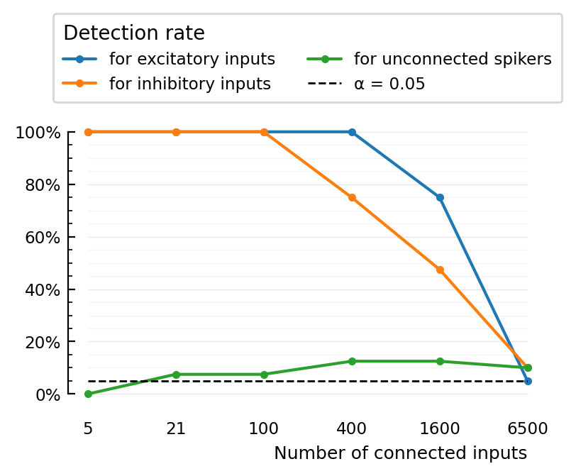

2022-05-02• STA mean vs peak-to-peak
Contents
2022-05-02• STA mean vs peak-to-peak¶
Peak-to-peak cannot distinguish excitatory vs inhibitory (it’s just the height of the bump – no matter whether it’s upwards or downwards).
To do that, we might instead use sth like “either max-median or min-median, whatever’s largest in absolute terms”.
For now we don’t try to detect this difference, and ‘cheat’ in our code (special-case the inhibitory / ptp case when comparing p-values with α).
Params¶
N_excs = [
4, # => N_inh = 1
17, # Same as in `previous_N_30_input`.
80,
320,
1280,
5200,
];
get_params(N_exc) = ExperimentParams(
sim = SimParams(
duration = 10 * minutes,
imaging = get_VI_params_for(cortical_RS, spike_SNR = Inf),
input = PoissonInputParams(; N_exc),
),
conntest = ConnTestParams(STA_test_statistic="ptp")
);
paramsets = get_params.(N_excs);
dumps(paramsets[1])
ExperimentParams
rngseed: 22022022
sim: SimParams
duration: 600.0
Δt: 0.0001
num_timesteps: 6000000
rngseed: 0
input: PoissonInputParams
N_unconn: 100
N_exc: 4
N_inh: 1
N_conn: 5
N: 105
spike_rates: LogNormal
μ: 1.08629
σ: 0.774597
synapses: SynapseParams
avg_stim_rate_exc: 1.0e-10
avg_stim_rate_inh: 4.0e-10
E_exc: 0.0
E_inh: -0.065
g_t0: 0.0
τ: 0.007
izh_neuron: IzhikevichParams
C: 1.0e-10
k: 7.0e-7
v_rest: -0.06
v_thr: -0.04
a: 30.0
b: -2.0e-9
v_peak: 0.035
v_reset: -0.05
Δu: 1.0e-10
v_t0: -0.06
u_t0: 0.0
imaging: VoltageImagingParams
spike_SNR: Inf
spike_SNR_dB: Inf
spike_height: 0.095
σ_noise: 0.0
conntest: ConnTestParams
STA_window_length: 0.1
num_shuffles: 100
STA_test_statistic: ptp
rngseed: 0
evaluation: EvaluationParams
α: 0.05
num_tested_neurons_per_group: 40
rngseed: 22022022
Run¶
perfs = Vector()
for paramset in paramsets
num_inputs = paramset.sim.input.N_conn
@show num_inputs
perf = performance_for(paramset)
@show perf
push!(perfs, perf)
println()
end
num_inputs = 5
Running simulation: 100%|███████████████████████████████| Time: 0:00:10
Testing connections: 100%|██████████████████████████████| Time: 0:00:06
perf = (TPR_exc = 1.0, TPR_inh = 1.0, FPR = 0.0)
num_inputs = 21
Running simulation: 100%|███████████████████████████████| Time: 0:00:10
Testing connections: 100%|██████████████████████████████| Time: 0:00:08
perf = (TPR_exc = 1.0, TPR_inh = 1.0, FPR = 0.07499999999999996)
num_inputs = 100
Running simulation: 100%|███████████████████████████████| Time: 0:00:10
Testing connections: 100%|██████████████████████████████| Time: 0:00:15
perf = (TPR_exc = 1.0, TPR_inh = 1.0, FPR = 0.07499999999999996)
num_inputs = 400
Running simulation: 100%|███████████████████████████████| Time: 0:00:15
Testing connections: 100%|██████████████████████████████| Time: 0:00:17
perf = (TPR_exc = 1.0, TPR_inh = 0.75, FPR = 0.125)
num_inputs = 1600
Running simulation: 100%|███████████████████████████████| Time: 0:00:45
Testing connections: 100%|██████████████████████████████| Time: 0:00:17
perf = (TPR_exc = 0.75, TPR_inh = 0.475, FPR = 0.125)
num_inputs = 6500
Running simulation: 100%|███████████████████████████████| Time: 0:02:31
Testing connections: 100%|██████████████████████████████| Time: 0:00:09
perf = (TPR_exc = 0.05, TPR_inh = 0.1, FPR = 0.09999999999999998)
Plot results¶
import PyPlot
using VoltageToMap.Plot
xlabels = [p.sim.input.N_conn for p in paramsets]
xticks = [1:length(xlabels);]
plot_detection_rate(detection_rate; kw...) = plot(
xticks,
detection_rate,
".-";
ylim=(0, 1),
xminorticks=false,
clip_on=false,
kw...
)
ax = plot_detection_rate([p.TPR_exc for p in perfs], label="for excitatory inputs")
plot_detection_rate([p.TPR_inh for p in perfs], label="for inhibitory inputs")
plot_detection_rate([p.FPR for p in perfs], label="for unconnected spikers")
@unpack α = paramsets[1].evaluation
ax.axhline(α, color="black", zorder=3, lw=1, linestyle="dashed", label=f"α = {α:.3G}")
# We don't use our `set`, as that undoes our `xminorticks=false` command (bug).
ax.set_xticks(xticks, xlabels)
ax.set_xlabel("Number of connected inputs")
ax.yaxis.set_major_formatter(PyPlot.matplotlib.ticker.PercentFormatter(xmax=1))
ax.xaxis.grid(false)
ax.tick_params(bottom=false)
ax.spines["bottom"].set_visible(false)
l = ax.legend(title="Detection rate", ncol=2, loc="lower center", bbox_to_anchor=(0.5, 1.1));
l._legend_box.align = "left";

[experiment with JLD]¶
simparams = SimParams()
SimParams
duration: Float64 10.0
Δt: Float64 0.0001
num_timesteps: Int64 100000
rngseed: Int64 0
input: PoissonInputParams
synapses: SynapseParams
izh_neuron: IzhikevichParams
imaging: VoltageImagingParams
cached(sim, [simparams])
Running simulation: 100%|███████████████████████████████| Time: 0:00:02
Saving output at C:\Users\lpxtf3\.phdcache\sim\f0f0133006d71ff8.jld2 … done
(t = 0.0:0.0001:9.9999, v = [-0.06, -0.06, -0.06, -0.059998499999999996, -0.05999554250146071, -0.05999116919268283, -0.059985420949328176, -0.05998033892943164, -0.05997390483727574, -0.05996615837956835 … -0.051569570355458685, -0.05156916502748691, -0.05156820579701809, -0.051566703387809436, -0.05156466832566514, -0.051564743591193576, -0.0515642560014237, -0.05156584912090414, -0.05156685005100639, -0.05156727021363436], vi = [-0.05757587363816176, -0.06346682170719456, -0.0451659909400253, -0.05756979600936673, -0.048797010341476474, -0.061702405563821, -0.07386042425783401, -0.06032683409766343, -0.0422456544695759, -0.06727810309083061 … -0.04307534263893664, -0.06532468910147522, -0.04369371068839138, -0.030218291917927624, -0.052239527228263215, -0.056862011763742996, -0.04992458470683031, -0.048951932823367524, -0.04760287086959901, -0.03519390455417906], input_spikes = (conn = (exc = [[0.24819999999998898, 1.2100999999998832, 2.0953999999999975, 2.4546000000007555, 2.805400000001496, 3.173300000002272, 3.5071000000029766, 3.8602000000037218, 4.2827000000033575, 4.89950000000192, 5.453500000000629, 5.809899999999798, 6.181899999998931, 6.7601999999975835, 7.154199999996665, 7.556099999995729, 8.330199999993924, 8.661399999993153, 9.034399999992283, 9.394599999991444], [0.6308999999999468, 1.7066999999998285, 2.2717000000003695, 2.6324000000011307, 3.165700000002256, 4.065100000003865, 4.828300000002086, 5.176400000001275, 5.855399999999692, 6.458299999998287, 6.810499999997466, 7.253899999996433, 8.171699999994294, 9.959199999990128], [0.2243999999999916, 0.4939999999999619, 0.8160999999999264, 1.5177999999998493, 1.8859999999998087, 2.371000000000579, 2.820200000001527, 3.2790000000024953, 3.934300000003878, 4.366200000003163 … 5.975499999999412, 6.331899999998582, 6.9330999999971805, 7.373899999996153, 7.761699999995249, 8.279399999994043, 8.660899999993154, 9.019399999992318, 9.506299999991183, 9.848099999990387], [0.08930000000000153, 0.620599999999948, 1.3896999999998634, 1.8064999999998175, 2.180400000000177, 3.2072000000023437, 3.5555000000030788, 3.890600000003786, 4.248400000003437, 4.680300000002431, 5.3790000000008025, 5.823999999999765, 6.254499999998762, 7.243899999996456, 7.801699999995156, 8.140099999994368, 8.517699999993487, 9.205699999991884, 9.66189999999082], [0.29589999999998373, 0.9998999999999062, 3.029200000001968, 4.6470000000025085, 5.6257000000002275, 6.18659999999892, 7.288499999996352, 7.93719999999484, 8.476499999993584, 9.569199999991037], [0.39299999999997304, 0.9223999999999147, 1.2527999999998785, 1.9509999999998016, 2.3395000000005126, 2.8413000000015716, 3.239000000002411, 3.6406000000032583, 4.3170000000032775, 5.047200000001576, 5.393500000000769, 5.919499999999543, 6.5640999999980405, 6.924499999997201, 7.262599999996413, 7.96729999999477, 8.687799999993091, 9.341299999991568, 9.672499999990796], [0.08910000000000153, 0.32459999999998057, 0.620299999999948, 1.0456999999999013, 1.51109999999985, 3.251800000002438, 3.9174000000038425, 4.64650000000251, 5.337600000000899, 5.700100000000054, 6.0667999999991995, 6.554899999998062, 6.917899999997216, 7.5556999999957295, 8.316199999993957, 8.806099999992815, 9.243599999991796], [3.0290000000019677, 4.360500000003176, 7.175499999996616, 9.449799999991315], [0.7787999999999305, 1.9642999999998, 2.5252000000009045, 2.9369000000017733, 3.3686000000026843, 4.25570000000342, 5.102100000001448, 6.162199999998977, 6.54299999999809, 7.135999999996708, 7.977399999994747, 8.48209999999357, 9.090399999992153, 9.673199999990794], [0.03409999999999995, 0.2545999999999883, 0.538199999999957, 1.2736999999998762, 1.829299999999815, 2.7469000000013724, 3.757100000003504, 4.503900000002842, 5.561100000000378, 6.111999999999094, 7.008799999997004, 7.938499999994837, 8.598999999993298, 9.458199999991296] … [0.43659999999996824, 0.7998999999999282, 1.1440999999998904, 1.5038999999998508, 3.1749000000022756, 3.6142000000032026, 4.38470000000312, 4.7607000000022435, 5.144400000001349, 5.921899999999537, 6.430299999998352, 7.835999999995076, 8.31909999999395, 8.93689999999251, 9.47369999999126, 9.837399999990412], [0.18869999999999554, 0.5908999999999512, 1.3884999999998635, 1.7870999999998196, 2.7251000000013264, 3.2612000000024577, 3.8824000000037686, 4.661400000002475, 5.4562000000006226, 5.794899999999833, 7.959999999994787, 8.354199999993869, 8.736299999992978, 9.364799999991513], [0.2542999999999883, 0.792799999999929, 1.3916999999998632, 1.937999999999803, 2.388900000000617, 2.846700000001583, 3.293500000002526, 3.662700000003305, 4.039900000003923, 4.428300000003018 … 5.438700000000663, 5.904299999999578, 6.369099999998495, 6.712399999997695, 7.175299999996616, 7.511099999995833, 8.322099999993943, 8.841799999992732, 9.358999999991527, 9.720999999990683], [0.1590999999999988, 0.674999999999942, 1.039799999999902, 1.5191999999998491, 2.235900000000294, 2.5806000000010214, 3.3612000000026687, 3.7543000000034983, 4.297500000003323, 4.82650000000209, 5.269200000001058, 5.886699999999619, 6.577999999998008, 6.936199999997173, 7.631399999995553, 8.023699999994639, 8.465699999993609, 9.368799999991504, 9.79119999999052], [0.2833999999999851, 0.5505999999999557, 2.601800000001066, 5.353600000000862, 6.864099999997341, 8.5125999999935], [1.7687999999998216, 2.4759000000008005, 3.624300000003224, 5.011800000001658, 5.498100000000525, 6.624699999997899, 8.45199999999364, 9.115299999992095, 9.614299999990932], [0.25379999999998837, 0.7707999999999314, 1.102899999999895, 1.4330999999998586, 2.0712999999999466, 2.576600000001013, 3.0005000000019075, 3.5222000000030085, 3.930900000003871, 4.783300000002191 … 5.99809999999936, 6.355399999998527, 6.694999999997735, 7.0583999999968885, 7.598899999995629, 7.972499999994758, 8.372999999993825, 8.878399999992647, 9.313199999991634, 9.682299999990773], [0.2650999999999871, 3.412900000002778, 3.8374000000036737, 5.082700000001493, 7.659599999995487, 9.329499999991596], [0.4443999999999674, 0.9216999999999148, 1.2813999999998753, 1.8252999999998154, 2.5617000000009815, 2.921500000001741, 3.87350000000375, 4.827300000002088, 5.397800000000759, 5.808199999999802, 6.945499999997152, 7.359399999996187, 7.820199999995113, 8.19059999999425, 8.583399999993334, 9.081499999992173, 9.52949999999113], [0.5103999999999601, 0.8301999999999249, 1.8269999999998152, 2.3271000000004864, 2.93050000000176, 4.025900000003956, 4.922400000001867, 6.790399999997513, 8.068699999994534, 9.265099999991746, 9.655899999990835]], inh = [[1.8070999999998174, 2.1806000000001773, 5.2168000000011805, 7.0424999999969256, 8.25949999999409, 9.44739999999132], [1.0185999999999042, 1.7968999999998185, 2.1820000000001802, 3.0209000000019506, 3.63670000000325, 4.1381000000036945, 4.503600000002843, 5.0765000000015075, 5.794299999999835, 6.7571999999975905, 7.383599999996131, 8.01909999999465, 8.484399999993565, 8.827799999992765, 9.379799999991478, 9.716999999990692], [0.5266999999999583, 1.8597999999998116, 2.267600000000361, 3.102500000002123, 4.43190000000301, 4.900400000001918, 5.281800000001029, 5.824199999999765, 6.2851999999986905, 6.90769999999724, 8.112899999994431, 9.218199999991855, 9.634199999990885], Float64[], [0.40579999999997163, 1.1421999999998906, 2.2262000000002735, 2.8682000000016283, 3.3672000000026814, 3.844700000003689, 4.348700000003204, 5.027600000001621, 5.6167000000002485, 6.334999999998574, 6.768799999997563, 7.757699999995259, 8.666099999993142, 9.23289999999182, 9.82529999999044], [0.6499999999999447, 3.2271000000023857, 3.813900000003624, 4.58200000000266, 5.202800000001213, 5.597700000000293, 6.077499999999175, 6.833399999997413, 8.374399999993821, 9.317399999991624, 9.972799999990096], [0.11490000000000226, 0.9662999999999099, 1.5853999999998418, 2.080999999999967, 2.41880000000068, 3.1592000000022424, 3.8118000000036196, 4.203100000003543, 5.350400000000869, 6.24679999999878, 6.64149999999786, 7.16059999999665, 7.64979999999551, 8.131899999994387, 9.125399999992071, 9.601299999990962], [0.9029999999999169, 1.5306999999998478, 1.983199999999798, 2.7431000000013643, 3.2413000000024157, 3.611600000003197, 3.9500000000039113, 4.441700000002987, 4.7830000000021915, 5.360600000000845, 5.767999999999896, 6.198399999998893, 6.569899999998027, 6.9459999999971505, 7.737799999995305, 8.235899999994144, 8.834599999992749, 9.302399999991659, 9.874099999990326], [5.466200000000599, 9.514999999991163], [0.3244999999999806, 0.7684999999999317, 2.4375000000007194, 3.8189000000036346, 4.49180000000287, 4.872900000001982, 5.79609999999983, 6.164699999998971, 6.964099999997108, 8.44389999999366, 9.705899999990718] … [0.40749999999997144, 1.0043999999999058, 1.4948999999998518, 1.8573999999998119, 2.4626000000007724, 3.024400000001958, 3.4629000000028833, 3.909600000003826, 4.250600000003432, 4.593500000002633 … 5.764699999999904, 6.098499999999126, 6.590499999997979, 7.316899999996286, 7.696299999995402, 8.17309999999429, 8.559999999993389, 8.977799999992415, 9.373899999991492, 9.701999999990727], [0.6772999999999417, 1.6462999999998351, 2.6081000000010794, 3.5294000000030237, 4.123300000003729, 4.471800000002917, 4.847400000002041, 6.062799999999209, 6.5962999999979655, 7.650699999995508, 8.428099999993696, 9.06549999999221, 9.76099999999059], [0.1345000000000015, 0.3485999999999779, 1.2253999999998815, 1.7095999999998281, 2.111700000000032, 2.971900000001847, 3.3848000000027185, 4.312600000003288, 5.313000000000956, 5.6523000000001655, 6.0487999999992415, 6.502999999998183, 6.988499999997051, 7.894099999994941, 8.434299999993682, 9.08319999999217], [1.3077999999998724, 3.417200000002787, 3.9320000000038733, 4.612300000002589, 5.480000000000567, 9.751599999990612], [0.21749999999999237, 0.4303999999999689, 1.4816999999998532, 2.0726999999999496, 2.544000000000944, 3.052900000002018, 3.547100000003061, 4.4951000000028625, 4.939800000001826, 5.304100000000977, 5.751499999999934, 6.495099999998201, 6.91609999999722, 7.33229999999625, 7.903899999994918, 8.389799999993786, 9.004899999992352, 9.352699999991541, 9.787099999990529], [0.5432999999999565, 0.8590999999999217, 1.2004999999998842, 1.7848999999998199, 2.2746000000003757, 2.6853000000012424, 3.202600000002334, 3.8211000000036393, 4.445400000002978, 4.86090000000201 … 5.733699999999976, 6.074699999999181, 6.485899999998223, 6.931499999997184, 7.270499999996394, 7.64549999999552, 8.033899999994615, 8.405699999993749, 8.85119999999271, 9.452699999991308], [0.6538999999999443, 1.546499999999846, 1.8965999999998076, 2.3381000000005097, 2.6939000000012605, 3.3615000000026694, 3.9564000000039248, 4.311200000003291, 5.1889000000012455, 5.55590000000039, 6.0590999999992174, 6.3915999999984425, 6.772099999997556, 7.347799999996214, 8.148799999994347, 9.062799999992217, 9.515899999991161, 9.997499999990039], [0.9684999999999097, 2.016999999999832, 2.3616000000005593, 2.9726000000018487, 3.6265000000032286, 4.310200000003293, 4.8010000000021495, 5.309400000000965, 6.20369999999888, 6.536699999998104, 7.780899999995205, 8.466399999993607, 8.793499999992845, 9.476099999991254], [0.12590000000000245, 0.6392999999999459, 1.4143999999998607, 1.7996999999998182, 2.453500000000753, 4.350600000003199, 4.904900000001907, 5.453700000000628, 6.343799999998554, 6.687699999997752, 7.932199999994852, 8.574499999993355, 9.173499999991959, 9.531099999991126], [0.41029999999997113, 0.8349999999999244, 1.3350999999998694, 1.7613999999998224, 2.215900000000252, 2.6057000000010744, 3.0222000000019533, 3.403600000002758, 3.8161000000036287, 4.199600000003551 … 5.729299999999986, 6.124799999999064, 6.489099999998215, 7.2295999999964895, 7.624499999995569, 8.09209999999448, 8.6409999999932, 9.047399999992253, 9.417299999991391, 9.911699999990239]]), unconn = [[0.011199999999999988, 0.39279999999997306, 1.0641999999998992, 2.204100000000227, 2.631500000001129, 3.378000000002704, 3.7761000000035443, 4.237900000003462, 4.63780000000253, 5.236800000001134, 5.6120000000002594, 6.4443999999983195, 6.813799999997459, 7.479599999995907, 7.860899999995018, 8.352299999993873, 9.06119999999222, 9.627299999990901], [0.5543999999999553, 1.6797999999998314, 2.416500000000675, 3.5061000000029745, 3.850400000003701, 4.585500000002652, 4.93830000000183, 5.326100000000926, 6.2336999999988105, 6.578599999998007, 7.122699999996739, 7.89009999999495, 8.965799999992443, 9.588899999990991], [0.8529999999999224, 1.3268999999998703, 2.236800000000296, 2.761400000001403, 3.144300000002211, 3.544700000003056, 4.1797000000035975, 4.645600000002512, 5.413900000000721, 6.486199999998222, 6.893799999997272, 7.633499999995548, 8.047899999994582, 8.411999999993734], [0.302699999999983, 0.7341999999999355, 1.4967999999998516, 1.8523999999998124, 2.2997000000004286, 3.057100000002027, 3.704400000003393, 4.180200000003596, 4.598300000002622, 5.195200000001231, 5.798699999999824, 6.479899999998237, 7.274499999996385, 8.318299999993952, 8.65389999999317, 9.048199999992251, 9.513099999991168], [0.1473000000000001, 0.5372999999999571, 0.8308999999999248, 1.1830999999998861, 1.5533999999998453, 2.0047999999998063, 2.431700000000707, 2.775600000001433, 3.10110000000212, 3.4307000000028154 … 5.966699999999433, 6.320599999998608, 6.677199999997777, 7.092599999996809, 7.735099999995311, 8.085199999994495, 8.430299999993691, 8.895899999992606, 9.384499999991467, 9.890399999990288], [0.29019999999998436, 1.1076999999998944, 2.1139000000000365, 2.5082000000008686, 4.007500000003999, 4.623700000002563, 5.243000000001119, 5.665400000000135, 6.093799999999137, 6.785299999997525, 7.496699999995867, 7.999699999994695, 8.688799999993089, 9.489199999991223], [1.0586999999998998, 1.8299999999998149, 3.8303000000036587, 4.7109000000023595, 5.743199999999954, 6.802799999997484, 8.072899999994524, 9.323699999991609, 9.661299999990822], [0.11500000000000227, 0.45659999999996603, 0.738599999999935, 1.1256999999998925, 1.5795999999998425, 1.9882999999997975, 2.5380000000009315, 2.9388000000017773, 3.326800000002596, 3.6780000000033373 … 5.875999999999644, 6.224499999998832, 6.612499999997928, 7.0836999999968295, 7.439799999996, 7.79999999999516, 8.43939999999367, 8.912599999992567, 9.252799999991774, 9.62329999999091], [0.9886999999999074, 1.8883999999998085, 2.4209000000006844, 3.800100000003595, 4.238400000003461, 5.023200000001632, 5.950999999999469, 6.364099999998507, 7.135299999996709, 7.464899999995941, 8.682199999993104, 9.76069999999059], [0.7183999999999372, 1.0569999999999, 2.9156000000017284, 3.877300000003758, 4.845300000002046, 5.57300000000035, 5.995599999999365, 7.1085999999967715, 7.435899999996009, 7.9392999999948355, 9.384399999991468, 9.805699999990486] … [0.4187999999999702, 0.720599999999937, 1.1687999999998877, 1.5435999999998464, 1.8975999999998074, 2.325400000000483, 2.67000000000121, 3.0602000000020335, 3.479800000002919, 3.8131000000036224 … 6.24689999999878, 6.611099999997931, 7.041399999996928, 7.373199999996155, 7.733999999995314, 8.10009999999446, 8.471899999993594, 8.83429999999275, 9.20769999999188, 9.697799999990737], [0.6708999999999424, 1.5916999999998411, 1.947899999999802, 2.595000000001052, 3.692100000003367, 4.193600000003565, 5.369400000000825, 5.804299999999811, 6.584199999997994, 7.865799999995007, 8.225699999994168], [0.5774999999999527, 0.9890999999999074, 1.8546999999998122, 2.510300000000873, 3.3503000000026457, 4.119300000003738, 4.557000000002718, 5.312800000000957, 5.718200000000012, 6.288999999998682, 6.718299999997681, 7.4792999999959076, 8.205999999994214, 8.99739999999237, 9.401499999991428], [4.827100000002089, 5.198100000001224, 8.54199999999343], [0.31649999999998146, 0.5890999999999514, 0.9274999999999142, 1.4417999999998576, 1.87409999999981, 2.3310000000004947, 2.672400000001215, 3.1317000000021844, 3.5421000000030505, 3.9748000000039636 … 5.059900000001546, 5.4704000000005895, 5.812599999999792, 6.814199999997458, 7.310299999996301, 7.667399999995469, 8.07859999999451, 8.517599999993488, 8.929999999992527, 9.376099999991487], [0.12120000000000244, 0.4441999999999674, 0.7193999999999371, 1.211199999999883, 1.6401999999998358, 2.0589999999999207, 2.401200000000643, 2.785600000001454, 3.7217000000034295, 4.180400000003596 … 5.8972999999995945, 6.370499999998492, 6.768399999997564, 7.126999999996729, 7.59829999999563, 8.198399999994232, 8.5977999999933, 8.986399999992395, 9.439799999991338, 9.817199999990459], [0.293399999999984, 0.6059999999999496, 0.96579999999991, 1.3454999999998682, 1.746999999999824, 2.45680000000076, 2.8009000000014863, 3.355200000002656, 3.7013000000033864, 4.034900000003935 … 6.0478999999992435, 6.481599999998233, 6.8442999999973875, 7.246099999996451, 7.625899999995566, 7.971399999994761, 8.49509999999354, 9.109899999992107, 9.49519999999121, 9.839599999990407], [0.9240999999999145, 1.4437999999998574, 3.9036000000038134, 5.245300000001114, 5.693900000000069, 8.165199999994309, 8.581399999993339, 8.946599999992488], [0.7398999999999348, 1.7503999999998237, 2.110400000000029, 4.295900000003327, 6.052699999999232, 7.579899999995673, 9.178999999991946], [3.0364000000019833, 4.777700000002204, 5.328000000000921, 6.747599999997613, 8.144299999994358, 9.645999999990858]]), state = (fixed_at_init = (ISI_distributions = (conn = (exc = Exponential{Float64}[Exponential{Float64}(θ=0.16255868636963586), Exponential{Float64}(θ=0.30421199059058573), Exponential{Float64}(θ=0.10355963402803622), Exponential{Float64}(θ=0.30658266851995997), Exponential{Float64}(θ=0.8587244693788796), Exponential{Float64}(θ=0.2650526200274539), Exponential{Float64}(θ=0.4047272001073812), Exponential{Float64}(θ=0.783460294061689), Exponential{Float64}(θ=0.2358878793522531), Exponential{Float64}(θ=0.3592031314848289) … Exponential{Float64}(θ=0.2393819721458843), Exponential{Float64}(θ=0.2671940181502594), Exponential{Float64}(θ=0.16762656779868718), Exponential{Float64}(θ=0.21820610521486733), Exponential{Float64}(θ=1.462646932424256), Exponential{Float64}(θ=0.6996061351335002), Exponential{Float64}(θ=0.21880978756873715), Exponential{Float64}(θ=1.2650008772554848), Exponential{Float64}(θ=0.17224476203896158), Exponential{Float64}(θ=0.4489002350496451)], inh = Exponential{Float64}[Exponential{Float64}(θ=0.978776113330092), Exponential{Float64}(θ=0.2930083863688994), Exponential{Float64}(θ=0.3640907911029168), Exponential{Float64}(θ=2.8184753088984573), Exponential{Float64}(θ=0.38121262895079067), Exponential{Float64}(θ=0.47225810412702646), Exponential{Float64}(θ=0.18781386677778483), Exponential{Float64}(θ=0.26063742152030456), Exponential{Float64}(θ=2.684572480280062), Exponential{Float64}(θ=0.6215609756442773) … Exponential{Float64}(θ=0.14610948885050346), Exponential{Float64}(θ=0.551345777540986), Exponential{Float64}(θ=0.3668694040511296), Exponential{Float64}(θ=0.7513450463497472), Exponential{Float64}(θ=0.23801791952114132), Exponential{Float64}(θ=0.17550777195932216), Exponential{Float64}(θ=0.22380166602035062), Exponential{Float64}(θ=0.23781523363396181), Exponential{Float64}(θ=0.32636386911297516), Exponential{Float64}(θ=0.12005569586343491)]), unconn = Exponential{Float64}[Exponential{Float64}(θ=0.33662271291275137), Exponential{Float64}(θ=0.2912311958666059), Exponential{Float64}(θ=0.4782853061635742), Exponential{Float64}(θ=0.24892043121254911), Exponential{Float64}(θ=0.10335853260740764), Exponential{Float64}(θ=0.3086359096643324), Exponential{Float64}(θ=0.5327749328635915), Exponential{Float64}(θ=0.08753572543688291), Exponential{Float64}(θ=0.5098249241595212), Exponential{Float64}(θ=0.6801085507866643) … Exponential{Float64}(θ=0.09300549995570924), Exponential{Float64}(θ=0.34665860065118403), Exponential{Float64}(θ=0.3896875092321232), Exponential{Float64}(θ=1.4373614933631178), Exponential{Float64}(θ=0.1586913816911651), Exponential{Float64}(θ=0.138663976151543), Exponential{Float64}(θ=0.09850798340979917), Exponential{Float64}(θ=0.5195109318553109), Exponential{Float64}(θ=0.9153609604463027), Exponential{Float64}(θ=1.219276026206206)]), postsynapses = Dict(4986 => [4986], 4700 => [4700], 4576 => [4576], 6073 => [6073], 2288 => [2288], 1703 => [1703], 1956 => [1956], 2350 => [2350], 5975 => [5975], 3406 => [3406]…), Δg = (exc = [2.5000000000000004e-11, 2.5000000000000004e-11, 2.5000000000000004e-11, 2.5000000000000004e-11, 2.5000000000000004e-11, 2.5000000000000004e-11, 2.5000000000000004e-11, 2.5000000000000004e-11, 2.5000000000000004e-11, 2.5000000000000004e-11 … 2.5000000000000004e-11, 2.5000000000000004e-11, 2.5000000000000004e-11, 2.5000000000000004e-11, 2.5000000000000004e-11, 2.5000000000000004e-11, 2.5000000000000004e-11, 2.5000000000000004e-11, 2.5000000000000004e-11, 2.5000000000000004e-11], inh = [1.0000000000000002e-10, 1.0000000000000002e-10, 1.0000000000000002e-10, 1.0000000000000002e-10, 1.0000000000000002e-10, 1.0000000000000002e-10, 1.0000000000000002e-10, 1.0000000000000002e-10, 1.0000000000000002e-10, 1.0000000000000002e-10 … 1.0000000000000002e-10, 1.0000000000000002e-10, 1.0000000000000002e-10, 1.0000000000000002e-10, 1.0000000000000002e-10, 1.0000000000000002e-10, 1.0000000000000002e-10, 1.0000000000000002e-10, 1.0000000000000002e-10, 1.0000000000000002e-10]), E = (exc = [0.0, 0.0, 0.0, 0.0, 0.0, 0.0, 0.0, 0.0, 0.0, 0.0 … 0.0, 0.0, 0.0, 0.0, 0.0, 0.0, 0.0, 0.0, 0.0, 0.0], inh = [-0.065, -0.065, -0.065, -0.065, -0.065, -0.065, -0.065, -0.065, -0.065, -0.065 … -0.065, -0.065, -0.065, -0.065, -0.065, -0.065, -0.065, -0.065, -0.065, -0.065])), variable_in_time = (vars = (t = 9.999999999990033, v = -0.051567120822803805, u = -1.746179102059395e-11, g = (exc = [3.741536919623064e-49, 7.155132045622521e-14, 8.16648194402199e-21, 1.8901290301321183e-32, 3.045898819796908e-38, 8.687205113760412e-32, 1.3713131060447538e-58, 1.0531010260014502e-45, 9.607772715475376e-32, 3.5268076581632024e-45 … 1.751448749227942e-21, 5.138816979527978e-51, 9.324390969928515e-29, 2.2718668133702625e-24, 2.8662720703617844e-104, 2.0044332419101696e-35, 3.558583042585866e-31, 3.198777670127477e-53, 1.0066595307402563e-40, 7.971765149694271e-33], inh = [2.9823268916312715e-45, 2.097599135528319e-28, 1.40472882429031e-33, 0.0, 1.2283851634548144e-21, 2.0255116523471146e-12, 1.235060356792001e-35, 1.3766445175257569e-18, 4.998560532997891e-41, 4.247067130238669e-29 … 2.42314891064092e-29, 1.1783116653544888e-25, 5.198547035313688e-68, 3.046905222521447e-26, 5.037742191572793e-24, 6.39366027192335e-45, 7.079868925194565e-11, 1.8535473595635417e-43, 5.069040830392709e-40, 3.079120872427995e-16])), diff = (t = 1.0, v = 0.001493908305528769, u = 1.7943774760160642e-11, g = (exc = [-5.422517274816035e-47, -1.0369756587858724e-11, -1.183548107829274e-18, -2.7393174349740846e-30, -4.4143461156476926e-36, -1.2590152338783205e-29, -1.987410298615585e-56, -1.5262333710165944e-43, -1.3924308283297647e-29, -5.111315446613337e-43 … -2.5383315206202055e-19, -7.44756083989562e-49, -1.3513610101345675e-26, -3.2925605990873367e-22, -4.154017493277948e-102, -2.9049757129132894e-33, -5.157366728385313e-29, -4.635909666851416e-51, -1.458926856145299e-38, -1.1553282825643873e-30], inh = [-4.322212886422133e-43, -3.0399987471424916e-26, -2.035838875783058e-31, -0.0, -1.7802683528330642e-19, -2.9355241338363975e-10, -1.7899425460753636e-33, -1.9951369819213868e-16, -7.244290627533175e-39, -6.155169753969085e-27 … -3.511810015421623e-27, -1.7076980657311433e-23, -7.534126138135779e-66, -4.4158046703209376e-24, -7.30107563996057e-22, -9.26617430713529e-43, -1.0260679601731253e-8, -2.686300521106582e-41, -7.34643598607639e-38, -4.462494018011587e-14])), upcoming_input_spikes = PriorityQueue(3646 => 9.670959137730282, 242 => 9.670959519875787, 2180 => 9.671016623982966, 6134 => 9.671019118408497, 741 => 9.67115985958449, 3296 => 9.671371951077221, 2759 => 9.671491910197918, 200 => 9.671513794701855, 4533 => 9.671805187646028, 4926 => 9.671864034380523…))))
cached(sim, [simparams])
Loading output from C:\Users\lpxtf3\.phdcache\sim\f0f0133006d71ff8.jld2 … done
(t = 0.0:0.0001:9.9999, v = [-0.06, -0.06, -0.06, -0.059998499999999996, -0.05999554250146071, -0.05999116919268283, -0.059985420949328176, -0.05998033892943164, -0.05997390483727574, -0.05996615837956835 … -0.051569570355458685, -0.05156916502748691, -0.05156820579701809, -0.051566703387809436, -0.05156466832566514, -0.051564743591193576, -0.0515642560014237, -0.05156584912090414, -0.05156685005100639, -0.05156727021363436], vi = [-0.05757587363816176, -0.06346682170719456, -0.0451659909400253, -0.05756979600936673, -0.048797010341476474, -0.061702405563821, -0.07386042425783401, -0.06032683409766343, -0.0422456544695759, -0.06727810309083061 … -0.04307534263893664, -0.06532468910147522, -0.04369371068839138, -0.030218291917927624, -0.052239527228263215, -0.056862011763742996, -0.04992458470683031, -0.048951932823367524, -0.04760287086959901, -0.03519390455417906], input_spikes = (conn = (exc = [[0.24819999999998898, 1.2100999999998832, 2.0953999999999975, 2.4546000000007555, 2.805400000001496, 3.173300000002272, 3.5071000000029766, 3.8602000000037218, 4.2827000000033575, 4.89950000000192, 5.453500000000629, 5.809899999999798, 6.181899999998931, 6.7601999999975835, 7.154199999996665, 7.556099999995729, 8.330199999993924, 8.661399999993153, 9.034399999992283, 9.394599999991444], [0.6308999999999468, 1.7066999999998285, 2.2717000000003695, 2.6324000000011307, 3.165700000002256, 4.065100000003865, 4.828300000002086, 5.176400000001275, 5.855399999999692, 6.458299999998287, 6.810499999997466, 7.253899999996433, 8.171699999994294, 9.959199999990128], [0.2243999999999916, 0.4939999999999619, 0.8160999999999264, 1.5177999999998493, 1.8859999999998087, 2.371000000000579, 2.820200000001527, 3.2790000000024953, 3.934300000003878, 4.366200000003163 … 5.975499999999412, 6.331899999998582, 6.9330999999971805, 7.373899999996153, 7.761699999995249, 8.279399999994043, 8.660899999993154, 9.019399999992318, 9.506299999991183, 9.848099999990387], [0.08930000000000153, 0.620599999999948, 1.3896999999998634, 1.8064999999998175, 2.180400000000177, 3.2072000000023437, 3.5555000000030788, 3.890600000003786, 4.248400000003437, 4.680300000002431, 5.3790000000008025, 5.823999999999765, 6.254499999998762, 7.243899999996456, 7.801699999995156, 8.140099999994368, 8.517699999993487, 9.205699999991884, 9.66189999999082], [0.29589999999998373, 0.9998999999999062, 3.029200000001968, 4.6470000000025085, 5.6257000000002275, 6.18659999999892, 7.288499999996352, 7.93719999999484, 8.476499999993584, 9.569199999991037], [0.39299999999997304, 0.9223999999999147, 1.2527999999998785, 1.9509999999998016, 2.3395000000005126, 2.8413000000015716, 3.239000000002411, 3.6406000000032583, 4.3170000000032775, 5.047200000001576, 5.393500000000769, 5.919499999999543, 6.5640999999980405, 6.924499999997201, 7.262599999996413, 7.96729999999477, 8.687799999993091, 9.341299999991568, 9.672499999990796], [0.08910000000000153, 0.32459999999998057, 0.620299999999948, 1.0456999999999013, 1.51109999999985, 3.251800000002438, 3.9174000000038425, 4.64650000000251, 5.337600000000899, 5.700100000000054, 6.0667999999991995, 6.554899999998062, 6.917899999997216, 7.5556999999957295, 8.316199999993957, 8.806099999992815, 9.243599999991796], [3.0290000000019677, 4.360500000003176, 7.175499999996616, 9.449799999991315], [0.7787999999999305, 1.9642999999998, 2.5252000000009045, 2.9369000000017733, 3.3686000000026843, 4.25570000000342, 5.102100000001448, 6.162199999998977, 6.54299999999809, 7.135999999996708, 7.977399999994747, 8.48209999999357, 9.090399999992153, 9.673199999990794], [0.03409999999999995, 0.2545999999999883, 0.538199999999957, 1.2736999999998762, 1.829299999999815, 2.7469000000013724, 3.757100000003504, 4.503900000002842, 5.561100000000378, 6.111999999999094, 7.008799999997004, 7.938499999994837, 8.598999999993298, 9.458199999991296] … [0.43659999999996824, 0.7998999999999282, 1.1440999999998904, 1.5038999999998508, 3.1749000000022756, 3.6142000000032026, 4.38470000000312, 4.7607000000022435, 5.144400000001349, 5.921899999999537, 6.430299999998352, 7.835999999995076, 8.31909999999395, 8.93689999999251, 9.47369999999126, 9.837399999990412], [0.18869999999999554, 0.5908999999999512, 1.3884999999998635, 1.7870999999998196, 2.7251000000013264, 3.2612000000024577, 3.8824000000037686, 4.661400000002475, 5.4562000000006226, 5.794899999999833, 7.959999999994787, 8.354199999993869, 8.736299999992978, 9.364799999991513], [0.2542999999999883, 0.792799999999929, 1.3916999999998632, 1.937999999999803, 2.388900000000617, 2.846700000001583, 3.293500000002526, 3.662700000003305, 4.039900000003923, 4.428300000003018 … 5.438700000000663, 5.904299999999578, 6.369099999998495, 6.712399999997695, 7.175299999996616, 7.511099999995833, 8.322099999993943, 8.841799999992732, 9.358999999991527, 9.720999999990683], [0.1590999999999988, 0.674999999999942, 1.039799999999902, 1.5191999999998491, 2.235900000000294, 2.5806000000010214, 3.3612000000026687, 3.7543000000034983, 4.297500000003323, 4.82650000000209, 5.269200000001058, 5.886699999999619, 6.577999999998008, 6.936199999997173, 7.631399999995553, 8.023699999994639, 8.465699999993609, 9.368799999991504, 9.79119999999052], [0.2833999999999851, 0.5505999999999557, 2.601800000001066, 5.353600000000862, 6.864099999997341, 8.5125999999935], [1.7687999999998216, 2.4759000000008005, 3.624300000003224, 5.011800000001658, 5.498100000000525, 6.624699999997899, 8.45199999999364, 9.115299999992095, 9.614299999990932], [0.25379999999998837, 0.7707999999999314, 1.102899999999895, 1.4330999999998586, 2.0712999999999466, 2.576600000001013, 3.0005000000019075, 3.5222000000030085, 3.930900000003871, 4.783300000002191 … 5.99809999999936, 6.355399999998527, 6.694999999997735, 7.0583999999968885, 7.598899999995629, 7.972499999994758, 8.372999999993825, 8.878399999992647, 9.313199999991634, 9.682299999990773], [0.2650999999999871, 3.412900000002778, 3.8374000000036737, 5.082700000001493, 7.659599999995487, 9.329499999991596], [0.4443999999999674, 0.9216999999999148, 1.2813999999998753, 1.8252999999998154, 2.5617000000009815, 2.921500000001741, 3.87350000000375, 4.827300000002088, 5.397800000000759, 5.808199999999802, 6.945499999997152, 7.359399999996187, 7.820199999995113, 8.19059999999425, 8.583399999993334, 9.081499999992173, 9.52949999999113], [0.5103999999999601, 0.8301999999999249, 1.8269999999998152, 2.3271000000004864, 2.93050000000176, 4.025900000003956, 4.922400000001867, 6.790399999997513, 8.068699999994534, 9.265099999991746, 9.655899999990835]], inh = [[1.8070999999998174, 2.1806000000001773, 5.2168000000011805, 7.0424999999969256, 8.25949999999409, 9.44739999999132], [1.0185999999999042, 1.7968999999998185, 2.1820000000001802, 3.0209000000019506, 3.63670000000325, 4.1381000000036945, 4.503600000002843, 5.0765000000015075, 5.794299999999835, 6.7571999999975905, 7.383599999996131, 8.01909999999465, 8.484399999993565, 8.827799999992765, 9.379799999991478, 9.716999999990692], [0.5266999999999583, 1.8597999999998116, 2.267600000000361, 3.102500000002123, 4.43190000000301, 4.900400000001918, 5.281800000001029, 5.824199999999765, 6.2851999999986905, 6.90769999999724, 8.112899999994431, 9.218199999991855, 9.634199999990885], Float64[], [0.40579999999997163, 1.1421999999998906, 2.2262000000002735, 2.8682000000016283, 3.3672000000026814, 3.844700000003689, 4.348700000003204, 5.027600000001621, 5.6167000000002485, 6.334999999998574, 6.768799999997563, 7.757699999995259, 8.666099999993142, 9.23289999999182, 9.82529999999044], [0.6499999999999447, 3.2271000000023857, 3.813900000003624, 4.58200000000266, 5.202800000001213, 5.597700000000293, 6.077499999999175, 6.833399999997413, 8.374399999993821, 9.317399999991624, 9.972799999990096], [0.11490000000000226, 0.9662999999999099, 1.5853999999998418, 2.080999999999967, 2.41880000000068, 3.1592000000022424, 3.8118000000036196, 4.203100000003543, 5.350400000000869, 6.24679999999878, 6.64149999999786, 7.16059999999665, 7.64979999999551, 8.131899999994387, 9.125399999992071, 9.601299999990962], [0.9029999999999169, 1.5306999999998478, 1.983199999999798, 2.7431000000013643, 3.2413000000024157, 3.611600000003197, 3.9500000000039113, 4.441700000002987, 4.7830000000021915, 5.360600000000845, 5.767999999999896, 6.198399999998893, 6.569899999998027, 6.9459999999971505, 7.737799999995305, 8.235899999994144, 8.834599999992749, 9.302399999991659, 9.874099999990326], [5.466200000000599, 9.514999999991163], [0.3244999999999806, 0.7684999999999317, 2.4375000000007194, 3.8189000000036346, 4.49180000000287, 4.872900000001982, 5.79609999999983, 6.164699999998971, 6.964099999997108, 8.44389999999366, 9.705899999990718] … [0.40749999999997144, 1.0043999999999058, 1.4948999999998518, 1.8573999999998119, 2.4626000000007724, 3.024400000001958, 3.4629000000028833, 3.909600000003826, 4.250600000003432, 4.593500000002633 … 5.764699999999904, 6.098499999999126, 6.590499999997979, 7.316899999996286, 7.696299999995402, 8.17309999999429, 8.559999999993389, 8.977799999992415, 9.373899999991492, 9.701999999990727], [0.6772999999999417, 1.6462999999998351, 2.6081000000010794, 3.5294000000030237, 4.123300000003729, 4.471800000002917, 4.847400000002041, 6.062799999999209, 6.5962999999979655, 7.650699999995508, 8.428099999993696, 9.06549999999221, 9.76099999999059], [0.1345000000000015, 0.3485999999999779, 1.2253999999998815, 1.7095999999998281, 2.111700000000032, 2.971900000001847, 3.3848000000027185, 4.312600000003288, 5.313000000000956, 5.6523000000001655, 6.0487999999992415, 6.502999999998183, 6.988499999997051, 7.894099999994941, 8.434299999993682, 9.08319999999217], [1.3077999999998724, 3.417200000002787, 3.9320000000038733, 4.612300000002589, 5.480000000000567, 9.751599999990612], [0.21749999999999237, 0.4303999999999689, 1.4816999999998532, 2.0726999999999496, 2.544000000000944, 3.052900000002018, 3.547100000003061, 4.4951000000028625, 4.939800000001826, 5.304100000000977, 5.751499999999934, 6.495099999998201, 6.91609999999722, 7.33229999999625, 7.903899999994918, 8.389799999993786, 9.004899999992352, 9.352699999991541, 9.787099999990529], [0.5432999999999565, 0.8590999999999217, 1.2004999999998842, 1.7848999999998199, 2.2746000000003757, 2.6853000000012424, 3.202600000002334, 3.8211000000036393, 4.445400000002978, 4.86090000000201 … 5.733699999999976, 6.074699999999181, 6.485899999998223, 6.931499999997184, 7.270499999996394, 7.64549999999552, 8.033899999994615, 8.405699999993749, 8.85119999999271, 9.452699999991308], [0.6538999999999443, 1.546499999999846, 1.8965999999998076, 2.3381000000005097, 2.6939000000012605, 3.3615000000026694, 3.9564000000039248, 4.311200000003291, 5.1889000000012455, 5.55590000000039, 6.0590999999992174, 6.3915999999984425, 6.772099999997556, 7.347799999996214, 8.148799999994347, 9.062799999992217, 9.515899999991161, 9.997499999990039], [0.9684999999999097, 2.016999999999832, 2.3616000000005593, 2.9726000000018487, 3.6265000000032286, 4.310200000003293, 4.8010000000021495, 5.309400000000965, 6.20369999999888, 6.536699999998104, 7.780899999995205, 8.466399999993607, 8.793499999992845, 9.476099999991254], [0.12590000000000245, 0.6392999999999459, 1.4143999999998607, 1.7996999999998182, 2.453500000000753, 4.350600000003199, 4.904900000001907, 5.453700000000628, 6.343799999998554, 6.687699999997752, 7.932199999994852, 8.574499999993355, 9.173499999991959, 9.531099999991126], [0.41029999999997113, 0.8349999999999244, 1.3350999999998694, 1.7613999999998224, 2.215900000000252, 2.6057000000010744, 3.0222000000019533, 3.403600000002758, 3.8161000000036287, 4.199600000003551 … 5.729299999999986, 6.124799999999064, 6.489099999998215, 7.2295999999964895, 7.624499999995569, 8.09209999999448, 8.6409999999932, 9.047399999992253, 9.417299999991391, 9.911699999990239]]), unconn = [[0.011199999999999988, 0.39279999999997306, 1.0641999999998992, 2.204100000000227, 2.631500000001129, 3.378000000002704, 3.7761000000035443, 4.237900000003462, 4.63780000000253, 5.236800000001134, 5.6120000000002594, 6.4443999999983195, 6.813799999997459, 7.479599999995907, 7.860899999995018, 8.352299999993873, 9.06119999999222, 9.627299999990901], [0.5543999999999553, 1.6797999999998314, 2.416500000000675, 3.5061000000029745, 3.850400000003701, 4.585500000002652, 4.93830000000183, 5.326100000000926, 6.2336999999988105, 6.578599999998007, 7.122699999996739, 7.89009999999495, 8.965799999992443, 9.588899999990991], [0.8529999999999224, 1.3268999999998703, 2.236800000000296, 2.761400000001403, 3.144300000002211, 3.544700000003056, 4.1797000000035975, 4.645600000002512, 5.413900000000721, 6.486199999998222, 6.893799999997272, 7.633499999995548, 8.047899999994582, 8.411999999993734], [0.302699999999983, 0.7341999999999355, 1.4967999999998516, 1.8523999999998124, 2.2997000000004286, 3.057100000002027, 3.704400000003393, 4.180200000003596, 4.598300000002622, 5.195200000001231, 5.798699999999824, 6.479899999998237, 7.274499999996385, 8.318299999993952, 8.65389999999317, 9.048199999992251, 9.513099999991168], [0.1473000000000001, 0.5372999999999571, 0.8308999999999248, 1.1830999999998861, 1.5533999999998453, 2.0047999999998063, 2.431700000000707, 2.775600000001433, 3.10110000000212, 3.4307000000028154 … 5.966699999999433, 6.320599999998608, 6.677199999997777, 7.092599999996809, 7.735099999995311, 8.085199999994495, 8.430299999993691, 8.895899999992606, 9.384499999991467, 9.890399999990288], [0.29019999999998436, 1.1076999999998944, 2.1139000000000365, 2.5082000000008686, 4.007500000003999, 4.623700000002563, 5.243000000001119, 5.665400000000135, 6.093799999999137, 6.785299999997525, 7.496699999995867, 7.999699999994695, 8.688799999993089, 9.489199999991223], [1.0586999999998998, 1.8299999999998149, 3.8303000000036587, 4.7109000000023595, 5.743199999999954, 6.802799999997484, 8.072899999994524, 9.323699999991609, 9.661299999990822], [0.11500000000000227, 0.45659999999996603, 0.738599999999935, 1.1256999999998925, 1.5795999999998425, 1.9882999999997975, 2.5380000000009315, 2.9388000000017773, 3.326800000002596, 3.6780000000033373 … 5.875999999999644, 6.224499999998832, 6.612499999997928, 7.0836999999968295, 7.439799999996, 7.79999999999516, 8.43939999999367, 8.912599999992567, 9.252799999991774, 9.62329999999091], [0.9886999999999074, 1.8883999999998085, 2.4209000000006844, 3.800100000003595, 4.238400000003461, 5.023200000001632, 5.950999999999469, 6.364099999998507, 7.135299999996709, 7.464899999995941, 8.682199999993104, 9.76069999999059], [0.7183999999999372, 1.0569999999999, 2.9156000000017284, 3.877300000003758, 4.845300000002046, 5.57300000000035, 5.995599999999365, 7.1085999999967715, 7.435899999996009, 7.9392999999948355, 9.384399999991468, 9.805699999990486] … [0.4187999999999702, 0.720599999999937, 1.1687999999998877, 1.5435999999998464, 1.8975999999998074, 2.325400000000483, 2.67000000000121, 3.0602000000020335, 3.479800000002919, 3.8131000000036224 … 6.24689999999878, 6.611099999997931, 7.041399999996928, 7.373199999996155, 7.733999999995314, 8.10009999999446, 8.471899999993594, 8.83429999999275, 9.20769999999188, 9.697799999990737], [0.6708999999999424, 1.5916999999998411, 1.947899999999802, 2.595000000001052, 3.692100000003367, 4.193600000003565, 5.369400000000825, 5.804299999999811, 6.584199999997994, 7.865799999995007, 8.225699999994168], [0.5774999999999527, 0.9890999999999074, 1.8546999999998122, 2.510300000000873, 3.3503000000026457, 4.119300000003738, 4.557000000002718, 5.312800000000957, 5.718200000000012, 6.288999999998682, 6.718299999997681, 7.4792999999959076, 8.205999999994214, 8.99739999999237, 9.401499999991428], [4.827100000002089, 5.198100000001224, 8.54199999999343], [0.31649999999998146, 0.5890999999999514, 0.9274999999999142, 1.4417999999998576, 1.87409999999981, 2.3310000000004947, 2.672400000001215, 3.1317000000021844, 3.5421000000030505, 3.9748000000039636 … 5.059900000001546, 5.4704000000005895, 5.812599999999792, 6.814199999997458, 7.310299999996301, 7.667399999995469, 8.07859999999451, 8.517599999993488, 8.929999999992527, 9.376099999991487], [0.12120000000000244, 0.4441999999999674, 0.7193999999999371, 1.211199999999883, 1.6401999999998358, 2.0589999999999207, 2.401200000000643, 2.785600000001454, 3.7217000000034295, 4.180400000003596 … 5.8972999999995945, 6.370499999998492, 6.768399999997564, 7.126999999996729, 7.59829999999563, 8.198399999994232, 8.5977999999933, 8.986399999992395, 9.439799999991338, 9.817199999990459], [0.293399999999984, 0.6059999999999496, 0.96579999999991, 1.3454999999998682, 1.746999999999824, 2.45680000000076, 2.8009000000014863, 3.355200000002656, 3.7013000000033864, 4.034900000003935 … 6.0478999999992435, 6.481599999998233, 6.8442999999973875, 7.246099999996451, 7.625899999995566, 7.971399999994761, 8.49509999999354, 9.109899999992107, 9.49519999999121, 9.839599999990407], [0.9240999999999145, 1.4437999999998574, 3.9036000000038134, 5.245300000001114, 5.693900000000069, 8.165199999994309, 8.581399999993339, 8.946599999992488], [0.7398999999999348, 1.7503999999998237, 2.110400000000029, 4.295900000003327, 6.052699999999232, 7.579899999995673, 9.178999999991946], [3.0364000000019833, 4.777700000002204, 5.328000000000921, 6.747599999997613, 8.144299999994358, 9.645999999990858]]), state = (fixed_at_init = (ISI_distributions = (conn = (exc = Exponential{Float64}[Exponential{Float64}(θ=0.16255868636963586), Exponential{Float64}(θ=0.30421199059058573), Exponential{Float64}(θ=0.10355963402803622), Exponential{Float64}(θ=0.30658266851995997), Exponential{Float64}(θ=0.8587244693788796), Exponential{Float64}(θ=0.2650526200274539), Exponential{Float64}(θ=0.4047272001073812), Exponential{Float64}(θ=0.783460294061689), Exponential{Float64}(θ=0.2358878793522531), Exponential{Float64}(θ=0.3592031314848289) … Exponential{Float64}(θ=0.2393819721458843), Exponential{Float64}(θ=0.2671940181502594), Exponential{Float64}(θ=0.16762656779868718), Exponential{Float64}(θ=0.21820610521486733), Exponential{Float64}(θ=1.462646932424256), Exponential{Float64}(θ=0.6996061351335002), Exponential{Float64}(θ=0.21880978756873715), Exponential{Float64}(θ=1.2650008772554848), Exponential{Float64}(θ=0.17224476203896158), Exponential{Float64}(θ=0.4489002350496451)], inh = Exponential{Float64}[Exponential{Float64}(θ=0.978776113330092), Exponential{Float64}(θ=0.2930083863688994), Exponential{Float64}(θ=0.3640907911029168), Exponential{Float64}(θ=2.8184753088984573), Exponential{Float64}(θ=0.38121262895079067), Exponential{Float64}(θ=0.47225810412702646), Exponential{Float64}(θ=0.18781386677778483), Exponential{Float64}(θ=0.26063742152030456), Exponential{Float64}(θ=2.684572480280062), Exponential{Float64}(θ=0.6215609756442773) … Exponential{Float64}(θ=0.14610948885050346), Exponential{Float64}(θ=0.551345777540986), Exponential{Float64}(θ=0.3668694040511296), Exponential{Float64}(θ=0.7513450463497472), Exponential{Float64}(θ=0.23801791952114132), Exponential{Float64}(θ=0.17550777195932216), Exponential{Float64}(θ=0.22380166602035062), Exponential{Float64}(θ=0.23781523363396181), Exponential{Float64}(θ=0.32636386911297516), Exponential{Float64}(θ=0.12005569586343491)]), unconn = Exponential{Float64}[Exponential{Float64}(θ=0.33662271291275137), Exponential{Float64}(θ=0.2912311958666059), Exponential{Float64}(θ=0.4782853061635742), Exponential{Float64}(θ=0.24892043121254911), Exponential{Float64}(θ=0.10335853260740764), Exponential{Float64}(θ=0.3086359096643324), Exponential{Float64}(θ=0.5327749328635915), Exponential{Float64}(θ=0.08753572543688291), Exponential{Float64}(θ=0.5098249241595212), Exponential{Float64}(θ=0.6801085507866643) … Exponential{Float64}(θ=0.09300549995570924), Exponential{Float64}(θ=0.34665860065118403), Exponential{Float64}(θ=0.3896875092321232), Exponential{Float64}(θ=1.4373614933631178), Exponential{Float64}(θ=0.1586913816911651), Exponential{Float64}(θ=0.138663976151543), Exponential{Float64}(θ=0.09850798340979917), Exponential{Float64}(θ=0.5195109318553109), Exponential{Float64}(θ=0.9153609604463027), Exponential{Float64}(θ=1.219276026206206)]), postsynapses = Dict(4986 => [4986], 4700 => [4700], 4576 => [4576], 6073 => [6073], 2288 => [2288], 1703 => [1703], 1956 => [1956], 2350 => [2350], 5975 => [5975], 3406 => [3406]…), Δg = (exc = [2.5000000000000004e-11, 2.5000000000000004e-11, 2.5000000000000004e-11, 2.5000000000000004e-11, 2.5000000000000004e-11, 2.5000000000000004e-11, 2.5000000000000004e-11, 2.5000000000000004e-11, 2.5000000000000004e-11, 2.5000000000000004e-11 … 2.5000000000000004e-11, 2.5000000000000004e-11, 2.5000000000000004e-11, 2.5000000000000004e-11, 2.5000000000000004e-11, 2.5000000000000004e-11, 2.5000000000000004e-11, 2.5000000000000004e-11, 2.5000000000000004e-11, 2.5000000000000004e-11], inh = [1.0000000000000002e-10, 1.0000000000000002e-10, 1.0000000000000002e-10, 1.0000000000000002e-10, 1.0000000000000002e-10, 1.0000000000000002e-10, 1.0000000000000002e-10, 1.0000000000000002e-10, 1.0000000000000002e-10, 1.0000000000000002e-10 … 1.0000000000000002e-10, 1.0000000000000002e-10, 1.0000000000000002e-10, 1.0000000000000002e-10, 1.0000000000000002e-10, 1.0000000000000002e-10, 1.0000000000000002e-10, 1.0000000000000002e-10, 1.0000000000000002e-10, 1.0000000000000002e-10]), E = (exc = [0.0, 0.0, 0.0, 0.0, 0.0, 0.0, 0.0, 0.0, 0.0, 0.0 … 0.0, 0.0, 0.0, 0.0, 0.0, 0.0, 0.0, 0.0, 0.0, 0.0], inh = [-0.065, -0.065, -0.065, -0.065, -0.065, -0.065, -0.065, -0.065, -0.065, -0.065 … -0.065, -0.065, -0.065, -0.065, -0.065, -0.065, -0.065, -0.065, -0.065, -0.065])), variable_in_time = (vars = (t = 9.999999999990033, v = -0.051567120822803805, u = -1.746179102059395e-11, g = (exc = [3.741536919623064e-49, 7.155132045622521e-14, 8.16648194402199e-21, 1.8901290301321183e-32, 3.045898819796908e-38, 8.687205113760412e-32, 1.3713131060447538e-58, 1.0531010260014502e-45, 9.607772715475376e-32, 3.5268076581632024e-45 … 1.751448749227942e-21, 5.138816979527978e-51, 9.324390969928515e-29, 2.2718668133702625e-24, 2.8662720703617844e-104, 2.0044332419101696e-35, 3.558583042585866e-31, 3.198777670127477e-53, 1.0066595307402563e-40, 7.971765149694271e-33], inh = [2.9823268916312715e-45, 2.097599135528319e-28, 1.40472882429031e-33, 0.0, 1.2283851634548144e-21, 2.0255116523471146e-12, 1.235060356792001e-35, 1.3766445175257569e-18, 4.998560532997891e-41, 4.247067130238669e-29 … 2.42314891064092e-29, 1.1783116653544888e-25, 5.198547035313688e-68, 3.046905222521447e-26, 5.037742191572793e-24, 6.39366027192335e-45, 7.079868925194565e-11, 1.8535473595635417e-43, 5.069040830392709e-40, 3.079120872427995e-16])), diff = (t = 1.0, v = 0.001493908305528769, u = 1.7943774760160642e-11, g = (exc = [-5.422517274816035e-47, -1.0369756587858724e-11, -1.183548107829274e-18, -2.7393174349740846e-30, -4.4143461156476926e-36, -1.2590152338783205e-29, -1.987410298615585e-56, -1.5262333710165944e-43, -1.3924308283297647e-29, -5.111315446613337e-43 … -2.5383315206202055e-19, -7.44756083989562e-49, -1.3513610101345675e-26, -3.2925605990873367e-22, -4.154017493277948e-102, -2.9049757129132894e-33, -5.157366728385313e-29, -4.635909666851416e-51, -1.458926856145299e-38, -1.1553282825643873e-30], inh = [-4.322212886422133e-43, -3.0399987471424916e-26, -2.035838875783058e-31, -0.0, -1.7802683528330642e-19, -2.9355241338363975e-10, -1.7899425460753636e-33, -1.9951369819213868e-16, -7.244290627533175e-39, -6.155169753969085e-27 … -3.511810015421623e-27, -1.7076980657311433e-23, -7.534126138135779e-66, -4.4158046703209376e-24, -7.30107563996057e-22, -9.26617430713529e-43, -1.0260679601731253e-8, -2.686300521106582e-41, -7.34643598607639e-38, -4.462494018011587e-14])), upcoming_input_spikes = PriorityQueue(3646 => 9.670959137730282, 242 => 9.670959519875787, 2180 => 9.671016623982966, 6134 => 9.671019118408497, 741 => 9.67115985958449, 3296 => 9.671371951077221, 2759 => 9.671491910197918, 200 => 9.671513794701855, 4533 => 9.671805187646028, 4926 => 9.671864034380523…))))
@withfb "sl" sleep(3)
sl … done
output = sim(simparams);
Running simulation: 100%|███████████████████████████████| Time: 0:00:02
dir = joinpath(homedir(), ".phdcache")
mkpath(dir)
path = joinpath(dir, string(hash(simparams), base=16) * ".hdf5")
"C:\\Users\\lpxtf3\\.phdcache\\58a8902d1513fbbc.hdf5"
joinpath(homedir(), nothing)
MethodError: no method matching joinpath(::String, ::Nothing)
Closest candidates are:
joinpath(::AbstractString...) at C:\Julia-1.7.1\share\julia\base\path.jl:327
Stacktrace:
[1] top-level scope
@ In[79]:1
[2] eval
@ .\boot.jl:373 [inlined]
[3] include_string(mapexpr::typeof(REPL.softscope), mod::Module, code::String, filename::String)
@ Base .\loading.jl:1196
jldsave(path2; simparams, output)
path2 = joinpath(dir, "blah.jld2")
"C:\\Users\\lpxtf3\\.phdcache\\blah.jld2"
jldsave(path2; output)
l = load(path2)
Dict{String, Any} with 2 entries:
"output" => (t = 0.0:0.0001:9.9999, v = [-0.06, -0.06, -0.06, -0.0599985, …
"simparams" => SimParams(10.0, 0.0001, 100000, 0, PoissonInputParams(100, 520…
o = l["output"];
homedir() / p".phdcache"
MethodError: no method matching /(::String, ::WindowsPath)
Closest candidates are:
/(::Any, ::ChainRulesCore.AbstractThunk) at C:\Users\lpxtf3\.julia\packages\ChainRulesCore\IzITE\src\tangent_types\thunks.jl:35
/(::ChainRulesCore.AbstractThunk, ::Any) at C:\Users\lpxtf3\.julia\packages\ChainRulesCore\IzITE\src\tangent_types\thunks.jl:34
/(::ChainRulesCore.AbstractZero, ::Any) at C:\Users\lpxtf3\.julia\packages\ChainRulesCore\IzITE\src\tangent_types\abstract_zero.jl:25
...
Stacktrace:
[1] top-level scope
@ In[66]:1
[2] eval
@ .\boot.jl:373 [inlined]
[3] include_string(mapexpr::typeof(REPL.softscope), mod::Module, code::String, filename::String)
@ Base .\loading.jl:1196
o.input_spikes.conn.exc[1]
20-element Vector{Float64}:
0.24819999999998898
1.2100999999998832
2.0953999999999975
2.4546000000007555
2.805400000001496
3.173300000002272
3.5071000000029766
3.8602000000037218
4.2827000000033575
4.89950000000192
5.453500000000629
5.809899999999798
6.181899999998931
6.7601999999975835
7.154199999996665
7.556099999995729
8.330199999993924
8.661399999993153
9.034399999992283
9.394599999991444